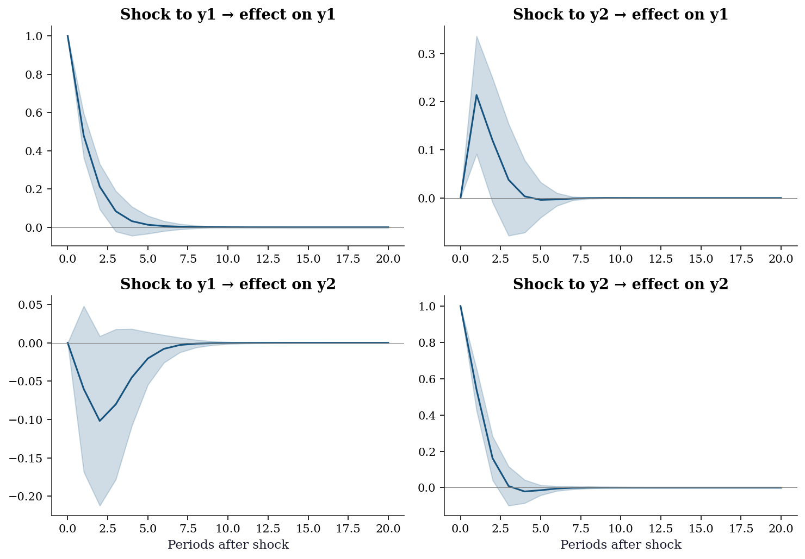
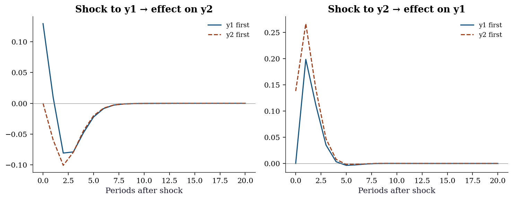
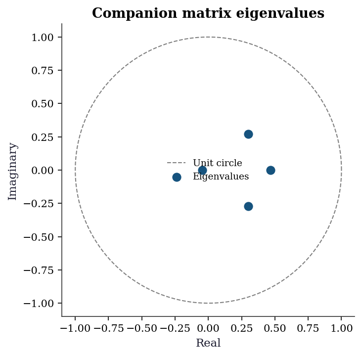
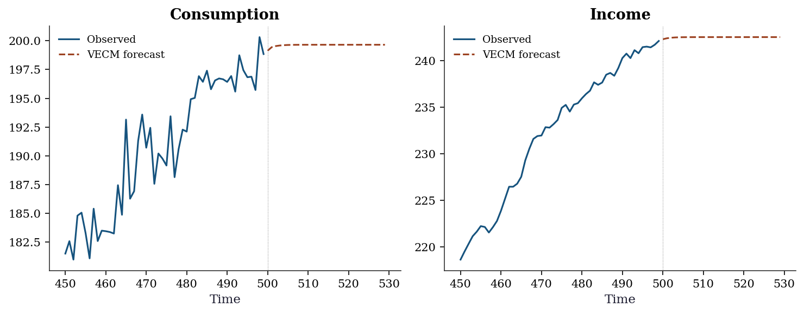

import numpy as np
import matplotlib.pyplot as plt
import pandas as pd
import statsmodels.api as sm
from statsmodels.tsa.api import VAR
from statsmodels.tsa.vector_ar.vecm import coint_johansen, VECM
from statsmodels.tsa.stattools import grangercausalitytests, adfuller
from scipy import stats
plt.style.use('assets/book.mplstyle')
rng = np.random.default_rng(42)17 Multivariate Time Series and Cointegration
17.0.1 Notation for this chapter
| Symbol | Meaning | statsmodels |
|---|---|---|
| \(\mathbf{y}_t = (y_{1t}, \ldots, y_{Kt})^\top\) | \(K\)-dimensional time series | endog (T×K array) |
| \(\boldsymbol{\Phi}_i\) | VAR coefficient matrix at lag \(i\) | .coefs[i] |
| \(\boldsymbol{\Sigma}_u\) | Innovation covariance matrix | .sigma_u |
| \(\boldsymbol{\Pi} = \boldsymbol{\alpha}\boldsymbol{\beta}^\top\) | Cointegrating matrix (VECM) | |
| \(r\) | Cointegrating rank | Johansen trace test |
| \(\boldsymbol{\beta}\) | Cointegrating vectors | vecm.beta |
| \(\boldsymbol{\alpha}\) | Adjustment speeds | vecm.alpha |
17.1 Motivation
Chapter 15 modeled one variable at a time. But economic and financial variables move together: interest rates affect exchange rates, GDP growth predicts unemployment, consumption tracks income. Ignoring these interdependencies means missing the signal.
The VAR (Vector Autoregression) models multiple time series simultaneously: each variable depends on its own lags AND the lags of all other variables. This captures dynamic interactions that univariate ARIMA cannot.
Granger causality is the key concept: variable \(A\) “Granger-causes” variable \(B\) if the past of \(A\) helps predict \(B\) beyond what \(B\)’s own past can predict. This is not causal in the counterfactual sense (Chapter 21), but it reveals predictive relationships.
Cointegration addresses a deeper question: when two non-stationary series share a common stochastic trend, their difference (or some linear combination) is stationary. The classic example: two stock prices that wander randomly but stay close to each other — their spread is stationary and mean-reverting, even though neither price is. This is the basis of pairs trading and error correction models.
17.2 Mathematical Foundation
17.2.1 The VAR(p) model
The VAR(p) generalizes AR(p) to \(K\) variables:
\[ \mathbf{y}_t = \boldsymbol{\nu} + \boldsymbol{\Phi}_1\mathbf{y}_{t-1} + \cdots + \boldsymbol{\Phi}_p\mathbf{y}_{t-p} + \mathbf{u}_t \tag{17.1}\]
where \(\mathbf{u}_t \sim \mathcal{N}(\mathbf{0}, \boldsymbol{\Sigma}_u)\).
Each \(\boldsymbol{\Phi}_i\) is a \(K \times K\) matrix. The \((j,k)\) entry of \(\boldsymbol{\Phi}_i\) tells you: how much does variable \(k\) at lag \(i\) affect variable \(j\) today? If \(\Phi_{jk,i} = 0\) for all \(i\), then variable \(k\) does not Granger-cause variable \(j\).
Why VAR works: Economic variables interact with lags. A rise in interest rates today affects investment next quarter, which affects employment the quarter after. VAR captures these lagged interdependencies without requiring you to specify the structural relationships in advance.
Estimation: Each equation of the VAR is a standard OLS regression (variable \(j\) regressed on all \(K\) variables at lags 1 through \(p\)). This means VAR estimation is fast and the theory from Chapter 11 applies equation by equation.
Stability: The VAR is stationary when all eigenvalues of the companion matrix lie inside the unit circle. Statsmodels checks this automatically.
17.2.2 Granger causality: predictive, not causal
Variable \(A\) Granger-causes variable \(B\) if the coefficients on \(A\)’s lags in the equation for \(B\) are jointly non-zero. Formally, it is a Wald test (Chapter 10) of \(H_0: \Phi_{BA,i} = 0\) for all lags \(i\).
What Granger causality IS: A test of predictive content. “Does knowing \(A\)’s past help predict \(B\)’s future?”
What Granger causality is NOT: A test of causation. If \(A\) and \(B\) are both driven by an unobserved common factor \(C\), \(A\) may Granger-cause \(B\) even though \(A\) has no causal effect on \(B\).
This distinction matters: Granger causality tests can identify predictive relationships (useful for forecasting), but you cannot interpret them as evidence that changing \(A\) would change \(B\) (that requires the methods of Chapters 20–23).
17.2.3 Impulse response functions: how shocks propagate
If variable \(k\) receives a one-unit shock at time \(t\) (an unexpected increase in \(u_{kt}\)), how does this affect all \(K\) variables over the next \(h\) periods? The impulse response function (IRF) answers this.
The IRF at horizon \(h\) is: \[ \frac{\partial \mathbf{y}_{t+h}}{\partial u_{kt}} = \boldsymbol{\Psi}_h \mathbf{e}_k, \] where \(\boldsymbol{\Psi}_h\) is the \(h\)-step MA coefficient matrix (from the VAR’s MA(\(\infty\)) representation) and \(\mathbf{e}_k\) is the \(k\)-th unit vector.
Why this matters: IRFs tell you how policy changes propagate through an economic system. A shock to interest rates → how does GDP respond over the next 8 quarters? A supply disruption → how does inflation respond? The VAR gives you these dynamic multipliers without imposing a structural model.
The identification problem: VAR innovations \(\mathbf{u}_t\) are typically correlated across variables (\(\boldsymbol{\Sigma}_u\) is not diagonal). To isolate the effect of a shock to one variable, you must orthogonalize the innovations. The most common approach is the Cholesky decomposition of \(\boldsymbol{\Sigma}_u\), which imposes a recursive ordering. The choice of ordering can affect the results — this is the structural identification problem.
17.2.4 Cointegration: long-run equilibrium
Two \(I(1)\) series (each non-stationary with a unit root) are cointegrated if there exists a linear combination that is \(I(0)\) (stationary):
\[ y_{1t} - \beta y_{2t} \sim I(0). \]
Why this matters: If \(y_1\) and \(y_2\) are cointegrated, they share a common stochastic trend. They may wander apart temporarily, but they always revert to the long-run relationship \(y_1 = \beta y_2 + \text{const}\). This mean-reversion is the basis for pairs trading in finance and error correction models in economics.
The Vector Error Correction Model (VECM): When variables are cointegrated, the correct model is not VAR in levels (non-stationary) or VAR in differences (throws away the long-run relationship), but the VECM:
\[ \Delta\mathbf{y}_t = \boldsymbol{\alpha}\boldsymbol{\beta}^\top\mathbf{y}_{t-1} + \sum_{i=1}^{p-1}\boldsymbol{\Gamma}_i\Delta\mathbf{y}_{t-i} + \mathbf{u}_t, \]
where \(\boldsymbol{\Pi} = \boldsymbol{\alpha}\boldsymbol{\beta}^\top\) has rank \(r\) (the cointegrating rank). The columns of \(\boldsymbol{\beta}\) are the cointegrating vectors (the long-run equilibria). \(\boldsymbol{\alpha}\) contains the adjustment speeds (how fast each variable reverts when the equilibrium is disturbed).
17.2.5 The Johansen test: how many cointegrating relationships?
The Johansen test determines the cointegrating rank \(r\) by testing a sequence of hypotheses: \(H_0: r = 0\) vs \(H_1: r > 0\); then \(H_0: r \leq 1\) vs \(H_1: r > 1\); etc. It uses the trace statistic or maximum eigenvalue statistic, which have non-standard distributions (like the ADF test in Chapter 15).
17.2.6 VAR stability via the companion matrix
A VAR(\(p\)) can always be rewritten as a VAR(1) in a higher-dimensional state vector. Stack \(p\) lags into a single \(Kp\)-dimensional vector \(\boldsymbol{\xi}_t = (\mathbf{y}_t^\top, \mathbf{y}_{t-1}^\top, \ldots, \mathbf{y}_{t-p+1}^\top)^\top\). Then
\[ \boldsymbol{\xi}_t = \mathbf{F}\boldsymbol{\xi}_{t-1} + \mathbf{v}_t, \]
where the companion matrix \(\mathbf{F}\) is
\[ \mathbf{F} = \begin{pmatrix} \boldsymbol{\Phi}_1 & \boldsymbol{\Phi}_2 & \cdots & \boldsymbol{\Phi}_{p-1} & \boldsymbol{\Phi}_p \\ \mathbf{I}_K & \mathbf{0} & \cdots & \mathbf{0} & \mathbf{0} \\ \mathbf{0} & \mathbf{I}_K & \cdots & \mathbf{0} & \mathbf{0} \\ \vdots & & \ddots & & \vdots \\ \mathbf{0} & \mathbf{0} & \cdots & \mathbf{I}_K & \mathbf{0} \end{pmatrix}, \]
and \(\mathbf{v}_t = (\mathbf{u}_t^\top, \mathbf{0}^\top, \ldots, \mathbf{0}^\top)^\top\). The VAR(\(p\)) is stationary if and only if all eigenvalues of \(\mathbf{F}\) lie strictly inside the unit circle. For a VAR(1), the companion matrix is simply \(\boldsymbol{\Phi}_1\) itself, so the stationarity condition reduces to checking the eigenvalues of the single coefficient matrix.
Why this matters for diagnostics: Statsmodels computes the companion eigenvalues internally, but understanding the construction lets you diagnose instabilities. An eigenvalue near 1 means a near-unit root in the system — the VAR behaves almost like a non-stationary process, and forecasts will have very slow decay.
17.2.7 Wold representation: from VAR to impulse responses
Every stationary VAR has an MA(\(\infty\)) representation (the Wold decomposition):
\[ \mathbf{y}_t = \boldsymbol{\mu} + \sum_{s=0}^{\infty} \boldsymbol{\Psi}_s \mathbf{u}_{t-s}, \]
where \(\boldsymbol{\Psi}_0 = \mathbf{I}_K\) and the subsequent coefficient matrices are computed recursively:
\[ \boldsymbol{\Psi}_s = \sum_{j=1}^{\min(s,p)} \boldsymbol{\Phi}_j \boldsymbol{\Psi}_{s-j}, \quad s = 1, 2, \ldots \tag{17.2}\]
The matrix \(\boldsymbol{\Psi}_s\) has a direct interpretation: element \((j,k)\) of \(\boldsymbol{\Psi}_s\) is the impulse response — the effect on variable \(j\) at time \(t+s\) of a one-unit shock to variable \(k\) at time \(t\). This recursive formula is how statsmodels computes IRFs internally: no matrix inversion, just a forward recursion from the estimated \(\boldsymbol{\Phi}_j\) matrices.
17.2.8 Forecast error variance decomposition (FEVD)
The Wold representation also tells us how much of the \(h\)-step-ahead forecast uncertainty in variable \(j\) is attributable to shocks from variable \(k\). The \(h\)-step forecast error is
\[ \mathbf{y}_{t+h} - \hat{\mathbf{y}}_{t+h|t} = \sum_{s=0}^{h-1} \boldsymbol{\Psi}_s \mathbf{u}_{t+h-s}. \]
After orthogonalizing innovations via a Cholesky decomposition \(\boldsymbol{\Sigma}_u = \mathbf{P}\mathbf{P}^\top\) (so that \(\boldsymbol{\varepsilon}_t = \mathbf{P}^{-1}\mathbf{u}_t\) has identity covariance), define \(\boldsymbol{\Theta}_s = \boldsymbol{\Psi}_s \mathbf{P}\). The share of variable \(j\)’s forecast variance at horizon \(h\) due to shocks from variable \(k\) is
\[ \text{FEVD}_{jk}(h) = \frac{\sum_{s=0}^{h-1} \Theta_{jk,s}^2}{\sum_{s=0}^{h-1} \sum_{m=1}^{K} \Theta_{jm,s}^2}. \]
At horizon \(h = 1\), forecast variance is dominated by own shocks. As \(h \to \infty\), the FEVD converges to the unconditional variance decomposition — this tells you which shocks are most important for long-run variability.
17.2.9 Engle–Granger two-step vs Johansen
Two approaches test for cointegration. They differ in scope and efficiency:
Engle–Granger two-step:
- Regress \(y_{1t}\) on \(y_{2t}\) by OLS (in levels). Save residuals \(\hat{e}_t = y_{1t} - \hat{\beta} y_{2t}\).
- Test \(\hat{e}_t\) for stationarity using an ADF test (with special critical values — the Engle–Granger table, not the standard ADF table, because the residuals are estimated).
If the residuals are stationary, the series are cointegrated. Simple, transparent, and easy to implement. But it has limitations:
- It assumes at most one cointegrating vector. With \(K > 2\) variables, there may be \(r > 1\) cointegrating relationships, and the two-step method cannot find them.
- The result depends on normalization: regressing \(y_1\) on \(y_2\) may give a different answer than regressing \(y_2\) on \(y_1\).
- It has efficiency loss because the cointegrating vector is estimated in the first step and treated as known in the second.
Johansen’s method (reduced-rank regression) handles all of these: it tests for the rank \(r\) directly, finds all \(r\) cointegrating vectors simultaneously, and is asymptotically efficient. Use Engle–Granger for quick exploratory checks with two variables; use Johansen for anything serious.
17.2.10 Structural VAR and the identification problem
The orthogonalized IRFs from the Cholesky decomposition impose a recursive causal ordering: the first variable in the system can affect all others contemporaneously, the second can affect all but the first, and so on. This is the structural identification assumption, and changing the variable ordering changes the results.
Formally, the structural shocks \(\boldsymbol{\varepsilon}_t\) satisfy \(\mathbf{u}_t = \mathbf{P}\boldsymbol{\varepsilon}_t\), where \(\mathbf{P}\) is the lower-triangular Cholesky factor of \(\boldsymbol{\Sigma}_u\). The \((j,k)\) entry of \(\mathbf{P}\), for \(j > k\), represents the contemporaneous effect of a structural shock to variable \(k\) on variable \(j\).
Why ordering matters: In a two-variable system with interest rates (\(r_t\)) and GDP (\(y_t\)), ordering \(r\) first means interest rate shocks affect GDP contemporaneously but GDP shocks cannot affect interest rates within the same period. Ordering \(y\) first reverses this. If the two orderings give similar IRFs, identification is robust. If they diverge, you need economic theory to justify the ordering — or alternative identification strategies (sign restrictions, external instruments) that are beyond our scope.
17.3 The Algorithm and SciPy Implementation
17.3.1 Step 1: Simulate a VAR
# Simulate a bivariate VAR(1):
# y1_t = 0.5 y1_{t-1} + 0.2 y2_{t-1} + u1_t
# y2_t = -0.1 y1_{t-1} + 0.6 y2_{t-1} + u2_t
T = 300
Phi = np.array([[0.5, 0.2],
[-0.1, 0.6]])
y_var = np.zeros((T, 2))
for t in range(1, T):
y_var[t] = Phi @ y_var[t-1] + rng.standard_normal(2)
print(f"True Phi matrix:")
print(Phi)
print(f"\nShape: {y_var.shape} (T={T} observations, K=2 variables)")True Phi matrix:
[[ 0.5 0.2]
[-0.1 0.6]]
Shape: (300, 2) (T=300 observations, K=2 variables)17.3.2 Step 1b: Verify stability via companion eigenvalues
For a VAR(1), the companion matrix is \(\boldsymbol{\Phi}_1\) itself. Stationarity requires all eigenvalues inside the unit circle.
# For VAR(1), companion matrix = Phi
eigs_true = np.linalg.eigvals(Phi)
print(f"Eigenvalues of Phi: {eigs_true.round(4)}")
print(f"|eigenvalues|: {np.abs(eigs_true).round(4)}")
print(f"All inside unit circle: {np.all(np.abs(eigs_true) < 1)}")
# For a VAR(p), build the companion matrix explicitly
# Example: refit as VAR(2) and check companion eigenvalues
var2_check = VAR(y_var).fit(maxlags=2)
K = 2
p = 2
F = np.zeros((K * p, K * p))
F[:K, :] = np.hstack(var2_check.coefs) # first row block
F[K:, :K] = np.eye(K) # identity below
eigs_companion = np.linalg.eigvals(F)
print(f"\nCompanion matrix eigenvalues (VAR(2)):")
for ev in eigs_companion:
print(f" {ev:.4f} |λ| = {abs(ev):.4f}")
print(f"All inside unit circle: "
f"{np.all(np.abs(eigs_companion) < 1)}")Eigenvalues of Phi: [0.55+0.1323j 0.55-0.1323j]
|eigenvalues|: [0.5657 0.5657]
All inside unit circle: True
Companion matrix eigenvalues (VAR(2)):
-0.0457+0.0000j |λ| = 0.0457
0.4668+0.0000j |λ| = 0.4668
0.2988+0.2695j |λ| = 0.4024
0.2988-0.2695j |λ| = 0.4024
All inside unit circle: TrueWhy the companion trick matters: For a VAR(2) with \(K = 5\), you have two \(5 \times 5\) coefficient matrices. Checking stability means building the \(10 \times 10\) companion and computing its eigenvalues — not checking each \(\boldsymbol{\Phi}_i\) separately.
17.3.3 Step 2: Select lag order and fit
# Create VAR model
var_model = VAR(y_var)
# Select lag order using information criteria
order = var_model.select_order(maxlags=5)
print("Lag selection:")
print(order.summary())
# Fit the model
var_result = var_model.fit(maxlags=2)
print(f"\nEstimated Phi at lag 1:")
print(var_result.coefs[0].round(3))
print(f"\nTrue Phi:")
print(Phi)Lag selection:
VAR Order Selection (* highlights the minimums)
=================================================
AIC BIC FPE HQIC
-------------------------------------------------
0 0.4321 0.4571 1.541 0.4421
1 -0.1147* -0.03973* 0.8916* -0.08469*
2 -0.1135 0.01144 0.8927 -0.06350
3 -0.09629 0.07868 0.9082 -0.02623
4 -0.07367 0.1513 0.9290 0.01642
5 -0.08346 0.1915 0.9200 0.02664
-------------------------------------------------
Estimated Phi at lag 1:
[[ 0.479 0.214]
[-0.06 0.539]]
True Phi:
[[ 0.5 0.2]
[-0.1 0.6]]Understanding the output: var_result.coefs[0] is the \(K \times K\) coefficient matrix at lag 1. Element \((j,k)\) is the effect of variable \(k\) at lag 1 on variable \(j\) today. Our estimates are close to the true values.
17.3.4 Step 3: Granger causality
# Test: does y1 Granger-cause y2?
# This tests whether the coefficients on y1's lags in the y2 equation
# are jointly zero.
gc_12 = var_result.test_causality('y2', ['y1'], kind='f')
print(f"y1 → y2: F = {gc_12.test_statistic:.3f}, "
f"p = {gc_12.pvalue:.4f}")
# Reverse: does y2 Granger-cause y1?
gc_21 = var_result.test_causality('y1', ['y2'], kind='f')
print(f"y2 → y1: F = {gc_21.test_statistic:.3f}, "
f"p = {gc_21.pvalue:.4f}")
print(f"\nTrue Phi[1,0] (y1→y2) = {Phi[1,0]:.1f} — "
f"{'significant' if gc_12.pvalue < 0.05 else 'not significant'}")
print(f"True Phi[0,1] (y2→y1) = {Phi[0,1]:.1f} — "
f"{'significant' if gc_21.pvalue < 0.05 else 'not significant'}")y1 → y2: F = 1.637, p = 0.1954
y2 → y1: F = 5.869, p = 0.0030
True Phi[1,0] (y1→y2) = -0.1 — not significant
True Phi[0,1] (y2→y1) = 0.2 — significant17.3.5 Step 4: Impulse response functions
irf = var_result.irf(periods=20)
fig, axes = plt.subplots(2, 2, figsize=(10, 7))
for i in range(2):
for j in range(2):
axes[i, j].plot(irf.irfs[:, i, j], color='C0', linewidth=1.5)
# Confidence interval
axes[i, j].fill_between(
range(21),
irf.irfs[:, i, j] - 1.96 * irf.stderr()[:, i, j],
irf.irfs[:, i, j] + 1.96 * irf.stderr()[:, i, j],
alpha=0.2, color='C0',
)
axes[i, j].axhline(0, color='gray', linewidth=0.5)
axes[i, j].set_title(f'Shock to y{j+1} → effect on y{i+1}')
if i == 1:
axes[i, j].set_xlabel('Periods after shock')
plt.tight_layout()
plt.show()
Reading the IRFs: The diagonal panels (y1→y1, y2→y2) show the persistence of own shocks. The off-diagonal panels show cross-effects. A shock to y1 has a positive but transient effect on y2 (top-right) — this is because \(\Phi_{21} = -0.1\) (slightly negative), but the indirect effect through the system creates a richer dynamic.
17.3.6 Step 5: Cointegration and VECM
# Simulate cointegrated series: y1 and y2 share a common trend
T_ci = 300
common_trend = np.cumsum(rng.standard_normal(T_ci)) # random walk
# y1 = trend + noise
# y2 = 2*trend + 0.5 + noise (cointegrating vector: y1 - 0.5*y2)
y1_ci = common_trend + rng.standard_normal(T_ci)
y2_ci = 2 * common_trend + 0.5 + rng.standard_normal(T_ci)
y_ci = np.column_stack([y1_ci, y2_ci])
# Both are non-stationary individually
print(f"ADF y1: p = {adfuller(y1_ci)[1]:.4f} → non-stationary")
print(f"ADF y2: p = {adfuller(y2_ci)[1]:.4f} → non-stationary")
# But their linear combination IS stationary
spread = y1_ci - 0.5 * y2_ci
print(f"ADF (y1 - 0.5*y2): p = {adfuller(spread)[1]:.4f} → stationary!")
print(f"\n→ y1 and y2 are cointegrated with vector (1, -0.5)")ADF y1: p = 0.6365 → non-stationary
ADF y2: p = 0.4499 → non-stationary
ADF (y1 - 0.5*y2): p = 0.0000 → stationary!
→ y1 and y2 are cointegrated with vector (1, -0.5)# Johansen test for cointegrating rank
joh = coint_johansen(y_ci, det_order=0, k_ar_diff=1)
print(f"Johansen trace test:")
print(f" {'H0':>5} {'Trace stat':>12} {'5% CV':>8} {'Reject?':>8}")
print(f" {'r=0':>5} {joh.lr1[0]:>12.2f} {joh.cvt[0, 1]:>8.2f} "
f"{'Yes' if joh.lr1[0] > joh.cvt[0, 1] else 'No':>8}")
print(f" {'r≤1':>5} {joh.lr1[1]:>12.2f} {joh.cvt[1, 1]:>8.2f} "
f"{'Yes' if joh.lr1[1] > joh.cvt[1, 1] else 'No':>8}")
r = np.sum(joh.lr1 > joh.cvt[:, 1])
print(f"\nCointegrating rank: r = {r}")Johansen trace test:
H0 Trace stat 5% CV Reject?
r=0 91.96 15.49 Yes
r≤1 1.31 3.84 No
Cointegrating rank: r = 1# Fit the VECM
vecm = VECM(y_ci, k_ar_diff=1, coint_rank=1, deterministic='ci').fit()
print(f"Cointegrating vector β: {vecm.beta.ravel().round(3)}")
print(f" (Should be ≈ [1, -0.5], normalized to first element)")
print(f"Adjustment speeds α: {vecm.alpha.ravel().round(3)}")
print(f"\nInterpretation: when the spread (y1 - 0.5*y2) is above")
print(f"equilibrium, y1 adjusts down by {vecm.alpha[0,0]:.3f} per period")
print(f"and y2 adjusts up by {vecm.alpha[1,0]:.3f} per period.")Cointegrating vector β: [ 1. -0.503]
(Should be ≈ [1, -0.5], normalized to first element)
Adjustment speeds α: [-0.613 0.335]
Interpretation: when the spread (y1 - 0.5*y2) is above
equilibrium, y1 adjusts down by -0.613 per period
and y2 adjusts up by 0.335 per period.17.3.7 Step 6: Forecast error variance decomposition
FEVD decomposes the forecast uncertainty of each variable into contributions from each shock source. It answers: at horizon \(h\), how much of the forecast variance of \(y_1\) is due to shocks from \(y_2\)?
fevd = var_result.fevd(periods=20)
# fevd.decomp is a dict: key=variable index, value=(periods, K)
print(f"FEVD of y1 at selected horizons:")
print(f" {'Horizon':>7} {'Own (y1)':>10} {'Cross (y2)':>12}")
for h in [1, 5, 10, 20]:
print(f" {h:>7} {fevd.decomp[0][h-1, 0]:>10.3f} "
f"{fevd.decomp[0][h-1, 1]:>12.3f}")
print(f"\nFEVD of y2 at selected horizons:")
print(f" {'Horizon':>7} {'Cross (y1)':>12} {'Own (y2)':>10}")
for h in [1, 5, 10, 20]:
print(f" {h:>7} {fevd.decomp[1][h-1, 0]:>12.3f} "
f"{fevd.decomp[1][h-1, 1]:>10.3f}")FEVD of y1 at selected horizons:
Horizon Own (y1) Cross (y2)
1 1.000 0.000
5 0.961 0.039
10 0.961 0.039
20 0.961 0.039
FEVD of y2 at selected horizons:
Horizon Cross (y1) Own (y2)
1 0.019 0.981
5 0.027 0.973
10 0.028 0.972
20 0.028 0.972At short horizons, own shocks dominate. As the horizon grows, the cross-variable contributions increase — reflecting the dynamic interdependence captured by the off-diagonal elements of \(\boldsymbol{\Phi}\).
17.3.8 Step 7: Structural VAR and Cholesky ordering
The Cholesky decomposition of \(\boldsymbol{\Sigma}_u\) orthogonalizes the innovations. The ordering of variables determines the causal structure imposed.
# Original ordering: y1 first, y2 second
# y1 can affect y2 contemporaneously, but not vice versa
irf_orth = var_result.irf(periods=20)
print("Orthogonalized IRF (y1 ordered first):")
print(f" Shock y1 → y2 at h=0: "
f"{irf_orth.orth_irfs[0, 1, 0]:.4f}")
print(f" Shock y2 → y1 at h=0: "
f"{irf_orth.orth_irfs[0, 0, 1]:.4f} (forced to 0)")
# Reverse ordering: swap columns of the data
y_var_rev = y_var[:, ::-1]
var_rev = VAR(y_var_rev).fit(maxlags=2)
irf_rev = var_rev.irf(periods=20)
print(f"\nReversed ordering (y2 first):")
print(f" Shock y2 → y1 at h=0: "
f"{irf_rev.orth_irfs[0, 1, 0]:.4f}")
print(f" Shock y1 → y2 at h=0: "
f"{irf_rev.orth_irfs[0, 0, 1]:.4f} (forced to 0)")Orthogonalized IRF (y1 ordered first):
Shock y1 → y2 at h=0: 0.1296
Shock y2 → y1 at h=0: 0.0000 (forced to 0)
Reversed ordering (y2 first):
Shock y2 → y1 at h=0: 0.1383
Shock y1 → y2 at h=0: 0.0000 (forced to 0)fig, axes = plt.subplots(1, 2, figsize=(10, 4))
# Shock to y1 -> effect on y2 (original ordering)
axes[0].plot(irf_orth.orth_irfs[:, 1, 0],
color='C0', linewidth=1.5, label='y1 first')
# Same cross-effect in reversed ordering
# In reversed data, shock to "new y2" (=original y1) -> "new y1" (=original y2)
axes[0].plot(irf_rev.orth_irfs[:, 0, 1],
color='C1', linewidth=1.5, linestyle='--',
label='y2 first')
axes[0].axhline(0, color='gray', linewidth=0.5)
axes[0].set_title('Shock to y1 → effect on y2')
axes[0].set_xlabel('Periods after shock')
axes[0].legend(fontsize=9)
# Shock to y2 -> effect on y1 (original ordering)
axes[1].plot(irf_orth.orth_irfs[:, 0, 1],
color='C0', linewidth=1.5, label='y1 first')
axes[1].plot(irf_rev.orth_irfs[:, 1, 0],
color='C1', linewidth=1.5, linestyle='--',
label='y2 first')
axes[1].axhline(0, color='gray', linewidth=0.5)
axes[1].set_title('Shock to y2 → effect on y1')
axes[1].set_xlabel('Periods after shock')
axes[1].legend(fontsize=9)
plt.tight_layout()
plt.show()
When the innovation correlation \(\boldsymbol{\Sigma}_u\) is nearly diagonal (innovations are nearly uncorrelated), the ordering barely matters. When innovations are highly correlated, the ordering matters a lot — and you need theory to pick it.
17.3.9 Step 8: Engle–Granger two-step cointegration test
The simplest cointegration test: regress one I(1) variable on another, then test whether the residuals are stationary.
# Step 1: OLS regression in levels
ols_eg = sm.OLS(y1_ci, sm.add_constant(y2_ci)).fit()
eg_resid = ols_eg.resid
print(f"Engle-Granger Step 1:")
print(f" y1 = {ols_eg.params[0]:.3f} + "
f"{ols_eg.params[1]:.3f} * y2 + residuals")
print(f" Estimated cointegrating coefficient: "
f"{ols_eg.params[1]:.3f} (true = 0.5)")
# Step 2: ADF test on residuals
# NB: must use Engle-Granger critical values, not standard ADF
adf_stat, adf_p, _, _, adf_cv, _ = adfuller(eg_resid)
print(f"\nEngle-Granger Step 2 (ADF on residuals):")
print(f" ADF statistic: {adf_stat:.3f}")
print(f" p-value: {adf_p:.4f}")
print(f" {'Reject → cointegrated' if adf_p < 0.05 else 'Fail to reject → no cointegration'}")
# Caveat: regressing y2 on y1 can give different results
ols_rev = sm.OLS(y2_ci, sm.add_constant(y1_ci)).fit()
adf_rev = adfuller(ols_rev.resid)
print(f"\nReversed regression y2 on y1:")
print(f" ADF p-value: {adf_rev[1]:.4f}")
print(f" Normalization matters — Johansen avoids this issue.")Engle-Granger Step 1:
y1 = -0.284 + 0.496 * y2 + residuals
Estimated cointegrating coefficient: 0.496 (true = 0.5)
Engle-Granger Step 2 (ADF on residuals):
ADF statistic: -10.151
p-value: 0.0000
Reject → cointegrated
Reversed regression y2 on y1:
ADF p-value: 0.0000
Normalization matters — Johansen avoids this issue.17.3.10 Step 9: VECM forecasting
Once the VECM is fitted, forecasts incorporate both the short-run dynamics (\(\boldsymbol{\Gamma}_i\)) and the error correction term (\(\boldsymbol{\alpha}\boldsymbol{\beta}^\top\mathbf{y}_{t-1}\)).
# Forecast 20 steps ahead with the VECM
h_fcast = 20
fcast = vecm.predict(steps=h_fcast)
print(f"VECM forecast (next {h_fcast} periods):")
print(f" {'Step':>4} {'y1 (consumption)':>18} {'y2 (income)':>14}")
for step in [1, 5, 10, 20]:
print(f" {step:>4} {fcast[step-1, 0]:>18.3f} "
f"{fcast[step-1, 1]:>14.3f}")
print(f"\nLast observed values:")
print(f" y1 = {y_ci[-1, 0]:.3f}, y2 = {y_ci[-1, 1]:.3f}")
print(f"\nThe VECM forecast reverts toward the long-run equilibrium.")
print(f"If the spread is currently above its mean, y1 drifts down")
print(f"and y2 drifts up until the equilibrium is restored.")VECM forecast (next 20 periods):
Step y1 (consumption) y2 (income)
1 -24.875 -49.059
5 -24.840 -49.110
10 -24.838 -49.111
20 -24.838 -49.111
Last observed values:
y1 = -25.175, y2 = -49.146
The VECM forecast reverts toward the long-run equilibrium.
If the spread is currently above its mean, y1 drifts down
and y2 drifts up until the equilibrium is restored.17.4 Variations, Diagnostics, and Pitfalls
17.4.1 Spurious regression: the biggest pitfall
If you run OLS of one random walk on another, you will often get a “significant” relationship — even though the two series are completely independent. This is spurious regression (Granger and Newbold, 1974).
# Two INDEPENDENT random walks
y_spur1 = np.cumsum(rng.standard_normal(200))
y_spur2 = np.cumsum(rng.standard_normal(200))
# OLS: regress one on the other
ols_spur = sm.OLS(y_spur1, sm.add_constant(y_spur2)).fit()
print(f"Spurious regression:")
print(f" R² = {ols_spur.rsquared:.3f} (looks great!)")
print(f" t-stat = {ols_spur.tvalues[1]:.2f} (highly significant!)")
print(f" p-value = {ols_spur.pvalues[1]:.4f}")
print(f"\nBut these series are INDEPENDENT. The 'relationship' is")
print(f"entirely spurious — caused by common stochastic trends.")
print(f"ADF on residuals: p = {adfuller(ols_spur.resid)[1]:.4f}")
print(f"Non-stationary residuals → the regression is meaningless.")Spurious regression:
R² = 0.774 (looks great!)
t-stat = 26.03 (highly significant!)
p-value = 0.0000
But these series are INDEPENDENT. The 'relationship' is
entirely spurious — caused by common stochastic trends.
ADF on residuals: p = 0.1444
Non-stationary residuals → the regression is meaningless.The fix: (1) Test for cointegration. If the series are cointegrated, the relationship is real (use VECM). If not, difference both series before modeling (use VAR in differences).
17.4.2 Stability diagnostics
# Check VAR stability: all eigenvalues of the lag-1 coefficient matrix
# must lie inside the unit circle (|eigenvalue| < 1)
eigs = np.linalg.eigvals(var_result.coefs[0])
print(f"Eigenvalues of Phi_1: {eigs.round(3)}")
print(f"|eigenvalues|: {np.abs(eigs).round(3)}")
print(f"All inside unit circle: {np.all(np.abs(eigs) < 1)} → stable")Eigenvalues of Phi_1: [0.509+0.109j 0.509-0.109j]
|eigenvalues|: [0.521 0.521]
All inside unit circle: True → stable17.4.3 Residual diagnostics
# Portmanteau test for residual autocorrelation
pt = var_result.test_whiteness(nlags=10)
print(f"Portmanteau test: stat = {pt.test_statistic:.2f}, "
f"p = {pt.pvalue:.4f}")
print(f"{'Residuals are white noise ✓' if pt.pvalue > 0.05 else 'Residual autocorrelation detected ✗'}")Portmanteau test: stat = 38.90, p = 0.1869
Residuals are white noise ✓17.4.4 Residual cross-correlation matrix
Beyond the portmanteau test, inspecting the cross-correlation structure of residuals reveals whether specific variable pairs have residual dependence that the VAR failed to capture.
resid = var_result.resid
corr_mat = np.corrcoef(resid.T)
print(f"Residual cross-correlation matrix:")
print(np.array2string(corr_mat, precision=3, suppress_small=True))
print(f"\nOff-diagonal values near zero indicate the VAR captured")
print(f"the contemporaneous dependence structure adequately.")
print(f"|corr(u1, u2)| = {abs(corr_mat[0, 1]):.3f}")Residual cross-correlation matrix:
[[1. 0.138]
[0.138 1. ]]
Off-diagonal values near zero indicate the VAR captured
the contemporaneous dependence structure adequately.
|corr(u1, u2)| = 0.13817.4.5 Stability roots plot
Plotting the companion matrix eigenvalues in the complex plane gives an immediate visual check: all roots must lie inside the unit circle. Roots near the boundary signal near-non-stationarity.
# Build companion matrix for the fitted VAR
K_fit = var_result.neqs
p_fit = var_result.k_ar
F_fit = np.zeros((K_fit * p_fit, K_fit * p_fit))
F_fit[:K_fit, :] = np.hstack(var_result.coefs)
if p_fit > 1:
F_fit[K_fit:, :K_fit * (p_fit - 1)] = np.eye(
K_fit * (p_fit - 1)
)
eigs_fit = np.linalg.eigvals(F_fit)
fig, ax = plt.subplots(figsize=(5, 5))
theta = np.linspace(0, 2 * np.pi, 200)
ax.plot(np.cos(theta), np.sin(theta),
color='gray', linewidth=1, linestyle='--',
label='Unit circle')
ax.scatter(eigs_fit.real, eigs_fit.imag,
color='C0', s=60, zorder=5,
label='Eigenvalues')
ax.set_xlabel('Real')
ax.set_ylabel('Imaginary')
ax.set_aspect('equal')
ax.legend(fontsize=9)
ax.set_title('Companion matrix eigenvalues')
plt.tight_layout()
plt.show()
17.4.6 Multivariate normality test
The Jarque–Bera test generalizes to the multivariate case. Under the null of multivariate normality, the test statistic follows a \(\chi^2\) distribution.
# Multivariate Jarque-Bera: test each equation's residuals
K_res = resid.shape[1]
print(f"Residual normality tests (univariate JB per equation):")
for k in range(K_res):
jb_stat, jb_p = stats.jarque_bera(resid[:, k])
label = 'Normal' if jb_p > 0.05 else 'Non-normal'
print(f" y{k+1}: JB = {jb_stat:.2f}, "
f"p = {jb_p:.4f} → {label}")
# Joint test: multivariate skewness and kurtosis
n_res = resid.shape[0]
S = np.cov(resid.T)
S_inv = np.linalg.inv(S)
z = resid @ np.linalg.cholesky(S_inv).T
skew_vals = np.mean(z ** 3, axis=0)
kurt_vals = np.mean(z ** 4, axis=0)
mv_stat = (n_res / 6) * np.sum(skew_vals ** 2) + \
(n_res / 24) * np.sum((kurt_vals - 3) ** 2)
mv_p = 1 - stats.chi2.cdf(mv_stat, 2 * K_res)
print(f"\nMultivariate JB (joint): stat = {mv_stat:.2f}, "
f"p = {mv_p:.4f}")Residual normality tests (univariate JB per equation):
y1: JB = 0.25, p = 0.8815 → Normal
y2: JB = 1.64, p = 0.4396 → Normal
Multivariate JB (joint): stat = 1.32, p = 0.8577Non-normality does not invalidate the VAR coefficient estimates (OLS is consistent regardless), but it affects the confidence intervals on IRFs and the coverage of bootstrap intervals.
17.4.7 Forecast evaluation: VAR vs univariate ARIMA
A VAR is worth the extra parameters only if it forecasts better than simple univariate models. Compare out-of-sample RMSE.
from statsmodels.tsa.arima.model import ARIMA
# Hold out last 50 observations
n_hold = 50
y_train = y_var[:-n_hold]
y_test = y_var[-n_hold:]
# VAR forecast
var_train = VAR(y_train).fit(maxlags=2)
var_fcast = var_train.forecast(y_train[-2:], steps=n_hold)
rmse_var = np.sqrt(
np.mean((y_test - var_fcast) ** 2, axis=0)
)
# Univariate ARIMA(1,0,0) for each variable
rmse_arima = np.zeros(2)
for k in range(2):
arima_fit = ARIMA(y_train[:, k], order=(1, 0, 0)).fit()
arima_fcast = arima_fit.forecast(steps=n_hold)
rmse_arima[k] = np.sqrt(
np.mean((y_test[:, k] - arima_fcast) ** 2)
)
print(f"Out-of-sample RMSE (h=1 to {n_hold}):")
print(f" {'':>4} {'VAR':>8} {'ARIMA':>8} {'VAR wins?':>10}")
for k in range(2):
wins = 'Yes' if rmse_var[k] < rmse_arima[k] else 'No'
print(f" y{k+1}: {rmse_var[k]:>8.3f} "
f"{rmse_arima[k]:>8.3f} {wins:>10}")
print(f"\nVAR should win when cross-variable dynamics are strong.")
print(f"If ARIMA wins, the VAR may be overfitting or the")
print(f"cross-variable effects are too weak to help.")Out-of-sample RMSE (h=1 to 50):
VAR ARIMA VAR wins?
y1: 1.262 1.259 No
y2: 0.890 0.889 No
VAR should win when cross-variable dynamics are strong.
If ARIMA wins, the VAR may be overfitting or the
cross-variable effects are too weak to help.17.4.8 Common mistakes
VAR in levels on non-stationary data: Gives inconsistent estimates unless the series are cointegrated. Always test for stationarity first.
Too many lags: VAR has \(K^2 p\) parameters. With \(K=5\) variables and \(p=4\) lags, that is 100 parameters. Overfitting is a real danger. Use AIC/BIC for lag selection.
Interpreting Granger causality as causation: It is predictive content, not causation. An unobserved common driver can create spurious Granger causality.
Cholesky ordering for IRFs: Results depend on the variable ordering. Try multiple orderings and check robustness.
17.5 From-Scratch Implementation
17.5.1 VAR(1) estimation by OLS
The VAR(1) can be estimated equation by equation via OLS. This is identical to running \(K\) separate regressions, each with the same regressors (lags of all \(K\) variables).
def fit_var1(y):
"""Fit VAR(1) by OLS.
The model is: y_t = Phi @ y_{t-1} + u_t
OLS estimate: Phi = (Y_1' Y_0) (Y_0' Y_0)^{-1}
where Y_0 = [y_0, ..., y_{T-2}]' and Y_1 = [y_1, ..., y_{T-1}]'.
Parameters
----------
y : array (T, K)
Multivariate time series data.
Returns
-------
Phi : array (K, K)
Estimated VAR(1) coefficient matrix.
Sigma : array (K, K)
Innovation covariance matrix.
"""
T, K = y.shape
Y1 = y[1:] # (T-1) × K — current values
Y0 = y[:-1] # (T-1) × K — lagged values
# OLS: Phi' = (Y0'Y0)^{-1} Y0'Y1, so Phi = Y1'Y0 (Y0'Y0)^{-1}
Phi = np.linalg.solve(Y0.T @ Y0, Y0.T @ Y1).T
# Innovation covariance
resid = Y1 - Y0 @ Phi.T
Sigma = resid.T @ resid / (T - 1)
return Phi, Sigma
# Verify against statsmodels VAR(1)
Phi_hat, Sigma_hat = fit_var1(y_var)
var1_check = VAR(y_var).fit(maxlags=1)
print(f"From-scratch Phi:")
print(Phi_hat.round(3))
print(f"\nstatsmodels VAR(1) Phi:")
print(var1_check.coefs[0].round(3))
print(f"\nTrue Phi:")
print(Phi)From-scratch Phi:
[[ 0.464 0.172]
[-0.097 0.493]]
statsmodels VAR(1) Phi:
[[ 0.463 0.171]
[-0.098 0.492]]
True Phi:
[[ 0.5 0.2]
[-0.1 0.6]]17.5.2 Impulse response functions from scratch
The IRF follows directly from the Wold recursion (Equation 17.2). Starting from \(\boldsymbol{\Psi}_0 = \mathbf{I}\), each subsequent matrix is computed from the VAR coefficients.
def irf_from_scratch(Phi_list, n_periods):
"""Compute IRF matrices via the Wold recursion.
Parameters
----------
Phi_list : list of arrays, each (K, K)
VAR coefficient matrices [Phi_1, ..., Phi_p].
n_periods : int
Number of periods for the IRF.
Returns
-------
Psi : array (n_periods + 1, K, K)
IRF matrices. Psi[h] is the response at horizon h.
"""
p = len(Phi_list)
K = Phi_list[0].shape[0]
Psi = np.zeros((n_periods + 1, K, K))
Psi[0] = np.eye(K)
for s in range(1, n_periods + 1):
for j in range(1, min(s, p) + 1):
Psi[s] += Phi_list[j - 1] @ Psi[s - j]
return Psi
# Compute from scratch using the fitted VAR coefficients
Phi_list = [var_result.coefs[i]
for i in range(var_result.k_ar)]
Psi_ours = irf_from_scratch(Phi_list, n_periods=20)
# Compare against statsmodels
irf_sm = var_result.irf(periods=20)
max_diff = np.max(np.abs(Psi_ours - irf_sm.irfs))
print(f"Max difference (from-scratch vs statsmodels): "
f"{max_diff:.2e}")
print(f"Match: {max_diff < 1e-10}")
# Show a few values
print(f"\nIRF at h=0 (should be identity):")
print(Psi_ours[0].round(3))
print(f"\nIRF at h=5 (from scratch):")
print(Psi_ours[5].round(4))
print(f"IRF at h=5 (statsmodels):")
print(irf_sm.irfs[5].round(4))Max difference (from-scratch vs statsmodels): 6.94e-18
Match: True
IRF at h=0 (should be identity):
[[1. 0.]
[0. 1.]]
IRF at h=5 (from scratch):
[[ 0.0132 -0.0039]
[-0.0203 -0.0142]]
IRF at h=5 (statsmodels):
[[ 0.0132 -0.0039]
[-0.0203 -0.0142]]17.5.3 Engle–Granger cointegration test from scratch
The two-step procedure is straightforward to implement: OLS on levels, then ADF on residuals.
def engle_granger_test(y1, y2):
"""Engle-Granger two-step cointegration test.
Step 1: OLS regression y1 = a + b*y2 + e.
Step 2: ADF test on residuals e.
Parameters
----------
y1, y2 : array (T,)
Two time series to test for cointegration.
Returns
-------
dict with keys: beta, adf_stat, adf_pvalue, resid.
"""
# Step 1: OLS by hand
X = np.column_stack([np.ones(len(y2)), y2])
beta = np.linalg.lstsq(X, y1, rcond=None)[0]
resid_eg = y1 - X @ beta
# Step 2: ADF on residuals
adf_result = adfuller(resid_eg, autolag='AIC')
return {
'intercept': beta[0],
'beta': beta[1],
'adf_stat': adf_result[0],
'adf_pvalue': adf_result[1],
'resid': resid_eg,
}
# Test on the cointegrated series
eg = engle_granger_test(y1_ci, y2_ci)
print(f"From-scratch Engle-Granger:")
print(f" y1 = {eg['intercept']:.3f} + "
f"{eg['beta']:.3f} * y2")
print(f" ADF on residuals: stat = {eg['adf_stat']:.3f}, "
f"p = {eg['adf_pvalue']:.4f}")
coint_label = 'Cointegrated' if eg['adf_pvalue'] < 0.05 \
else 'Not cointegrated'
print(f" Conclusion: {coint_label}")
# Compare with statsmodels OLS + ADF
print(f"\nstatsmodels OLS coefficient: "
f"{ols_eg.params[1]:.3f}")
print(f"From-scratch coefficient: {eg['beta']:.3f}")
print(f"Match: {abs(eg['beta'] - ols_eg.params[1]) < 1e-10}")From-scratch Engle-Granger:
y1 = -0.284 + 0.496 * y2
ADF on residuals: stat = -10.151, p = 0.0000
Conclusion: Cointegrated
statsmodels OLS coefficient: 0.496
From-scratch coefficient: 0.496
Match: True17.6 Computational Considerations
| Model | Parameters | Estimation cost | Notes |
|---|---|---|---|
| VAR(\(p\)), \(K\) variables | \(K^2 p + K\) | \(O(TK^2 p)\) per equation | OLS, fast |
| Johansen test | — | \(O(TK^2 p + K^3)\) | Eigenvalue problem |
| VECM (rank \(r\)) | \(Kr + K^2(p-1)\) | \(O(TK^2 p)\) | Reduced-rank regression |
Scaling: VAR parameter count grows as \(K^2 p\). For \(K > 10\), consider shrinkage methods (Bayesian VAR, Lasso-VAR) or factor models to reduce dimensionality.
17.7 Worked Example
Testing whether consumption and income are cointegrated.
# Simulate consumption-income data
T_w = 500
income = np.cumsum(0.5 + 0.5 * rng.standard_normal(T_w))
consumption = 0.8 * income + 5 + 2 * rng.standard_normal(T_w)
y_w = np.column_stack([consumption, income])
# Both are I(1)
print(f"ADF consumption: p = {adfuller(consumption)[1]:.4f}")
print(f"ADF income: p = {adfuller(income)[1]:.4f}")
# Test for cointegration
joh_w = coint_johansen(y_w, det_order=1, k_ar_diff=1)
r_w = np.sum(joh_w.lr1 > joh_w.cvt[:, 1])
print(f"\nJohansen rank: {r_w}")
if r_w > 0:
vecm_w = VECM(y_w, k_ar_diff=1, coint_rank=1,
deterministic='ci').fit()
print(f"Cointegrating vector: {vecm_w.beta.ravel().round(3)}")
print(f"(Should be ≈ [1, -0.8] for consumption = 0.8 × income)")
print(f"\nAdjustment speeds: {vecm_w.alpha.ravel().round(3)}")
print(f"Negative α for consumption: when consumption is 'too high'")
print(f"relative to income, it adjusts downward.")ADF consumption: p = 0.9976
ADF income: p = 0.9982
Johansen rank: 2
Cointegrating vector: [ 1. -0.8]
(Should be ≈ [1, -0.8] for consumption = 0.8 × income)
Adjustment speeds: [-1.068 -0.05 ]
Negative α for consumption: when consumption is 'too high'
relative to income, it adjusts downward.17.7.0.1 Full Johansen procedure walkthrough
The Johansen output has several components. Let’s read each one.
# Detailed Johansen output
print(f"Johansen trace test (detailed):")
print(f" {'H0':>5} {'Trace':>8} {'90% CV':>8} "
f"{'95% CV':>8} {'99% CV':>8}")
for i in range(2):
h0 = f"r≤{i}"
print(f" {h0:>5} {joh_w.lr1[i]:>8.2f} "
f"{joh_w.cvt[i, 0]:>8.2f} "
f"{joh_w.cvt[i, 1]:>8.2f} "
f"{joh_w.cvt[i, 2]:>8.2f}")
print(f"\nMax-eigenvalue test:")
print(f" {'H0':>5} {'MaxEig':>8} {'90% CV':>8} "
f"{'95% CV':>8} {'99% CV':>8}")
for i in range(2):
h0 = f"r≤{i}"
print(f" {h0:>5} {joh_w.lr2[i]:>8.2f} "
f"{joh_w.cvt[i, 0]:>8.2f} "
f"{joh_w.cvt[i, 1]:>8.2f} "
f"{joh_w.cvt[i, 2]:>8.2f}")
print(f"\nEigenvalues: {joh_w.eig.round(4)}")
print(f"Cointegrating vectors (columns of eigvecs):")
print(joh_w.evec.round(3))Johansen trace test (detailed):
H0 Trace 90% CV 95% CV 99% CV
r≤0 239.98 16.16 18.40 23.15
r≤1 7.79 2.71 3.84 6.63
Max-eigenvalue test:
H0 MaxEig 90% CV 95% CV 99% CV
r≤0 232.19 16.16 18.40 23.15
r≤1 7.79 2.71 3.84 6.63
Eigenvalues: [0.3726 0.0155]
Cointegrating vectors (columns of eigvecs):
[[ 0.719 0.001]
[-0.535 0.287]]Reading the trace test: Start at \(r = 0\). If the trace statistic exceeds the critical value, reject \(H_0: r = 0\) and move to \(H_0: r \leq 1\). Continue until you fail to reject. The last rejected rank is \(r\).
17.7.0.2 Error correction interpretation
The VECM decomposes dynamics into two parts: the error correction term (\(\boldsymbol{\alpha}\boldsymbol{\beta}^\top\mathbf{y}_{t-1}\)) that pulls variables back to equilibrium, and the short-run dynamics (\(\boldsymbol{\Gamma}_i \Delta\mathbf{y}_{t-i}\)) that capture transient adjustments.
if r_w > 0:
beta_w = vecm_w.beta.ravel()
alpha_w = vecm_w.alpha.ravel()
# Compute the equilibrium error at each time point
eq_error = y_w[:-1] @ beta_w
half_life = np.log(2) / max(abs(alpha_w[0]), 1e-10)
print(f"Error correction mechanics:")
print(f" Equilibrium: {beta_w[0]:.3f} * consumption "
f"+ {beta_w[1]:.3f} * income = 0")
print(f"\n Adjustment speeds (α):")
print(f" Consumption: {alpha_w[0]:+.4f}")
print(f" Income: {alpha_w[1]:+.4f}")
print(f"\n Half-life of adjustment: "
f"{half_life:.1f} periods")
print(f"\n When consumption is 'too high' relative to")
print(f" income (positive equilibrium error):")
if alpha_w[0] < 0:
print(f" → consumption adjusts DOWN "
f"(α = {alpha_w[0]:.3f})")
if alpha_w[1] > 0:
print(f" → income adjusts UP "
f"(α = {alpha_w[1]:.3f})")Error correction mechanics:
Equilibrium: 1.000 * consumption + -0.800 * income = 0
Adjustment speeds (α):
Consumption: -1.0680
Income: -0.0505
Half-life of adjustment: 0.6 periods
When consumption is 'too high' relative to
income (positive equilibrium error):
→ consumption adjusts DOWN (α = -1.068)17.7.0.3 VECM forecast vs VAR in differences
Forecasting with the VECM preserves the long-run equilibrium relationship. A VAR in differences cannot: it models changes only and loses the level information.
if r_w > 0:
h_w = 30
fcast_w = vecm_w.predict(steps=h_w)
fig, axes = plt.subplots(1, 2, figsize=(10, 4))
# Plot last 50 observations + forecast
n_hist = 50
t_hist = np.arange(T_w - n_hist, T_w)
t_fcast = np.arange(T_w, T_w + h_w)
labels = ['Consumption', 'Income']
for k in range(2):
axes[k].plot(t_hist, y_w[-n_hist:, k],
color='C0', linewidth=1.5,
label='Observed')
axes[k].plot(t_fcast, fcast_w[:, k],
color='C1', linewidth=1.5,
linestyle='--', label='VECM forecast')
axes[k].axvline(T_w, color='gray',
linewidth=0.5, linestyle=':')
axes[k].set_title(labels[k])
axes[k].set_xlabel('Time')
axes[k].legend(fontsize=9)
plt.tight_layout()
plt.show()
17.8 Exercises
Exercise 17.1 (\(\star\star\), diagnostic failure). Run a VAR on two independent random walks (no cointegration). Test Granger causality. Does it reject? Repeat with 10 different seeds. This illustrates spurious Granger causality on non-stationary data.
%%
reject_count = 0
for seed in range(10):
r = np.random.default_rng(seed)
y_ind = np.column_stack([
np.cumsum(r.standard_normal(200)),
np.cumsum(r.standard_normal(200)),
])
# VAR on DIFFERENCES (correct approach)
var_d = VAR(np.diff(y_ind, axis=0)).fit(maxlags=2)
gc = var_d.test_causality('y2', ['y1'], kind='f')
if gc.pvalue < 0.05:
reject_count += 1
print(f"Rejected (differences): {reject_count}/10")
print(f"Should be ≈ 0-1 at 5% level for independent series.")Rejected (differences): 1/10
Should be ≈ 0-1 at 5% level for independent series.%%
Exercise 17.2 (\(\star\star\), comparison). Compare VAR lag selection using AIC vs BIC on the simulated VAR(1) data with \(T = 50\) and \(T = 500\). Do they agree? Why might BIC select fewer lags?
%%
for T_sel in [50, 500]:
y_sel = np.zeros((T_sel, 2))
for t in range(1, T_sel):
y_sel[t] = Phi @ y_sel[t-1] + rng.standard_normal(2)
sel = VAR(y_sel).select_order(maxlags=5)
print(f"T={T_sel}: AIC selects p={sel.aic}, BIC selects p={sel.bic}")
print(f"\nBIC has a heavier penalty (ln(n) vs 2) and tends to select")
print(f"fewer lags, especially with small samples. With large T,")
print(f"both should select the true order (p=1).")T=50: AIC selects p=1, BIC selects p=1
T=500: AIC selects p=1, BIC selects p=1
BIC has a heavier penalty (ln(n) vs 2) and tends to select
fewer lags, especially with small samples. With large T,
both should select the true order (p=1).%%
Exercise 17.3 (\(\star\star\), implementation). Implement VAR(1) estimation by OLS from scratch. Verify against statsmodels.
%%
P_ours, S_ours = fit_var1(y_var)
var1_sm = VAR(y_var).fit(maxlags=1)
print(f"Match: {np.allclose(P_ours, var1_sm.coefs[0], atol=0.01)}")
print(f"Max difference: {np.max(np.abs(P_ours - var1_sm.coefs[0])):.6f}")Match: True
Max difference: 0.001103%%
Exercise 17.4 (\(\star\star\star\), conceptual). Two stock prices are both random walks but their spread is stationary (cointegrated). Explain why you should trade the spread (pairs trading), not the individual stocks. What does the adjustment speed \(\alpha\) tell you about the trading strategy?
%%
Individual stocks are random walks — their future direction is unpredictable. But if the spread is stationary, it mean-reverts: when it is wide, it will narrow; when it is narrow, it will widen.
Trading rule: When spread > mean: sell the expensive stock, buy the cheap one (the spread will revert). When spread < mean: do the reverse.
The adjustment speed \(\alpha\) determines how fast the spread reverts. Large \(|\alpha|\) = fast reversion = short holding period, lower risk, smaller profit per trade. Small \(|\alpha|\) = slow reversion = long holding period, more risk (the spread may widen further before reverting), but larger profit per trade.
The half-life of mean reversion is approximately \(\ln(2)/|\alpha|\) periods. A trader uses this to size positions and set stop-losses.
%%
17.9 Bibliographic Notes
VAR: Sims (1980) introduced the methodology to macroeconomics. Lütkepohl (2005) is the definitive textbook and covers the companion matrix formulation, Wold representation, and FEVD in detail.
Granger causality: Granger (1969). It is a test of prediction, not causation — Granger himself was careful about this distinction.
Spurious regression: Granger and Newbold (1974). Phillips (1986) showed that \(R^2 \to 1\) and \(t\)-statistics diverge when regressing one random walk on another.
Cointegration: Engle and Granger (1987) for the two-step procedure (regress levels, test residuals for stationarity). Johansen (1991) for the reduced-rank regression approach and the trace/eigenvalue tests. Hamilton (1994, Ch. 19–20) provides an accessible treatment of both.
VECM: Engle and Granger (1987) proved the Granger Representation Theorem: cointegrated variables have a VECM representation. Johansen (1995) is the canonical reference for the reduced-rank regression estimator and the asymptotic theory of trace and max-eigenvalue tests.
For the structural identification problem in VAR (Cholesky ordering, sign restrictions, etc.): Kilian and Lütkepohl (2017). Christiano, Eichenbaum, and Evans (1999) is the classic application of Cholesky- identified SVAR to monetary policy.